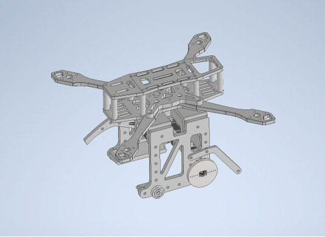
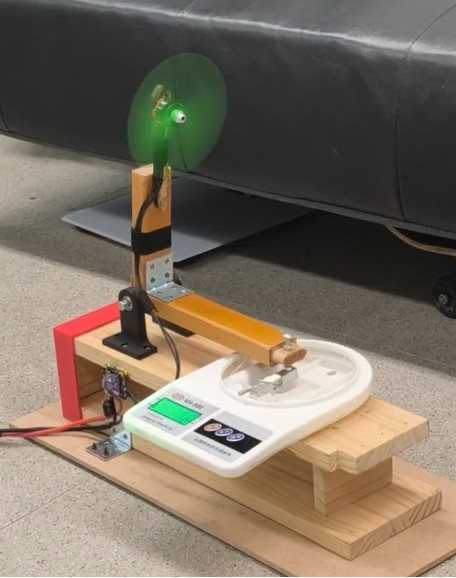
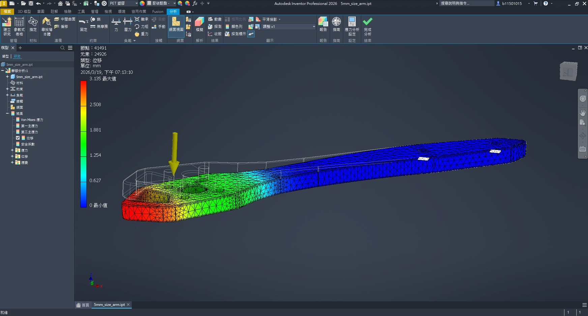
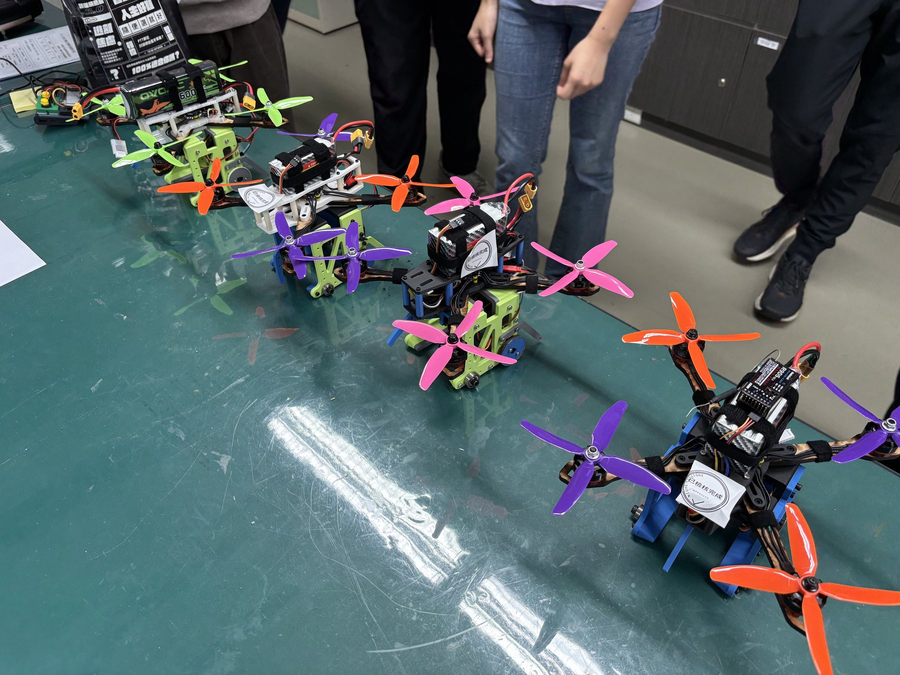
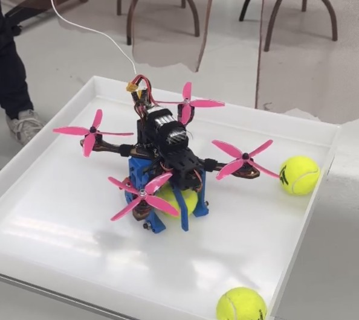

Case Study | Flying Robot System
Quadcopter Ball-Transfer Drone
A mission-driven quadcopter built to move a ball between platforms, requiring airframe design, payload integration, thrust testing, signal debugging, and final-test risk management. The build became a visible reference point for many peer teams in the course.
Defined the drone as a system, not a collection of parts.
The ball-transfer mission forced every design decision to interact: payload placement changed mass distribution, frame stiffness affected vibration, and power choices affected control margin. I coordinated the team around the full mission rather than isolated subsystem progress.
That systems view helped us prioritize the decisions that mattered most for stable testing: airframe geometry, mechanism placement, electronics layout, and spare assemblies.
The drone became a reference point for many peer teams, who looked to our architecture, testing approach, and integration decisions while developing their own builds.

Used testing to separate flight problems from design problems.
We used thrust-to-throttle testing to understand propulsion margin before final flights. During integration, we separated motor behavior, SBUS setup, controller configuration, vibration, and structural resonance instead of blaming every issue on tuning.
Propulsion
Measured thrust behavior to guide safer design and flight decisions.
Signals
Checked control signal flow as part of system reliability.
Structure
Treated vibration and resonance as stability risks, not side effects.


Prepared for a final evaluation with little room for failure.
The final run demanded reliability under limited formal attempts. I helped the team prepare spare parts, check rules, and plan likely failure responses so the build could survive pressure instead of relying on a perfect single attempt.
- Stable flight depended on structure, signals, power, and tuning working together.
- Spare parts and fallback plans turned uncertainty into controlled risk.
- Leadership meant converting noisy test results into clear next actions.


Engineering flow
Connected ball transfer, airframe layout, payload placement, and flight stability.
Used thrust-to-throttle testing to understand motor, propeller, ESC, and battery behavior.
Separated signal-chain, controller, vibration, and structural causes during tests.
Planned spare parts, rule checks, and fallback responses for limited attempts.
Technical decision table
| Constraint | Decision | Why it mattered | Skill demonstrated |
|---|---|---|---|
| Payload affected mass distribution | Treated airframe and transfer mechanism as one system | Reduced the chance of stable frame design failing after payload integration | System architecture |
| Flight behavior depended on propulsion margin | Ran thrust-to-throttle testing before final flights | Converted motor uncertainty into usable design information | Experimental validation |
| Instability had multiple possible causes | Separated signal, controller, vibration, and structural issues | Prevented the team from treating every problem as a tuning issue | Integration debugging |
| Peer teams needed working examples | Built a system clear enough for others to reference during their own integration | Showed that our architecture and test process were understandable beyond our team | Technical communication |
Capability signals
Applicant signal
Reviewer takeaway
This project shows that I can lead a physical robotics system where mechanical design, electrical integration, testing, and risk control interact. The fact that many peers used our design and testing approach as a reference makes it a strong signal of engineering clarity, not just course completion.